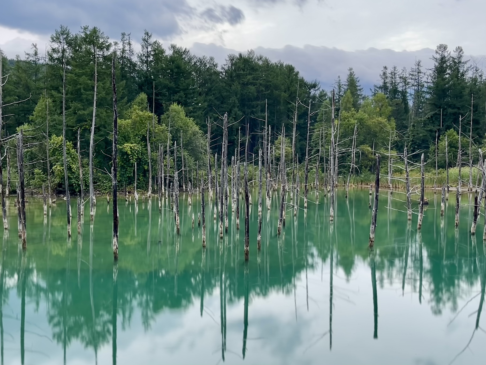
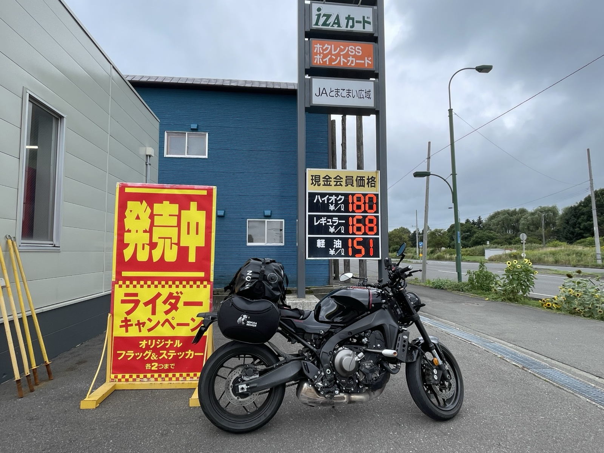
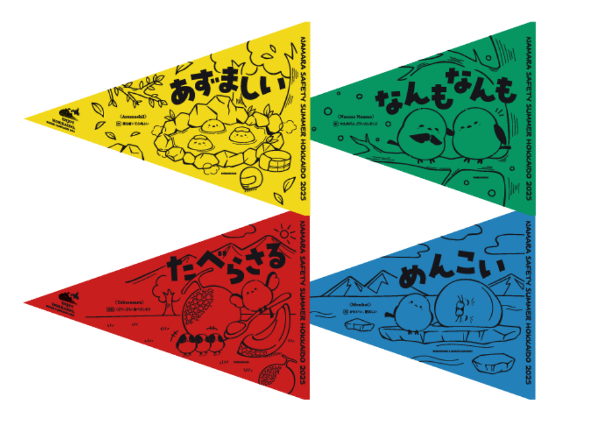
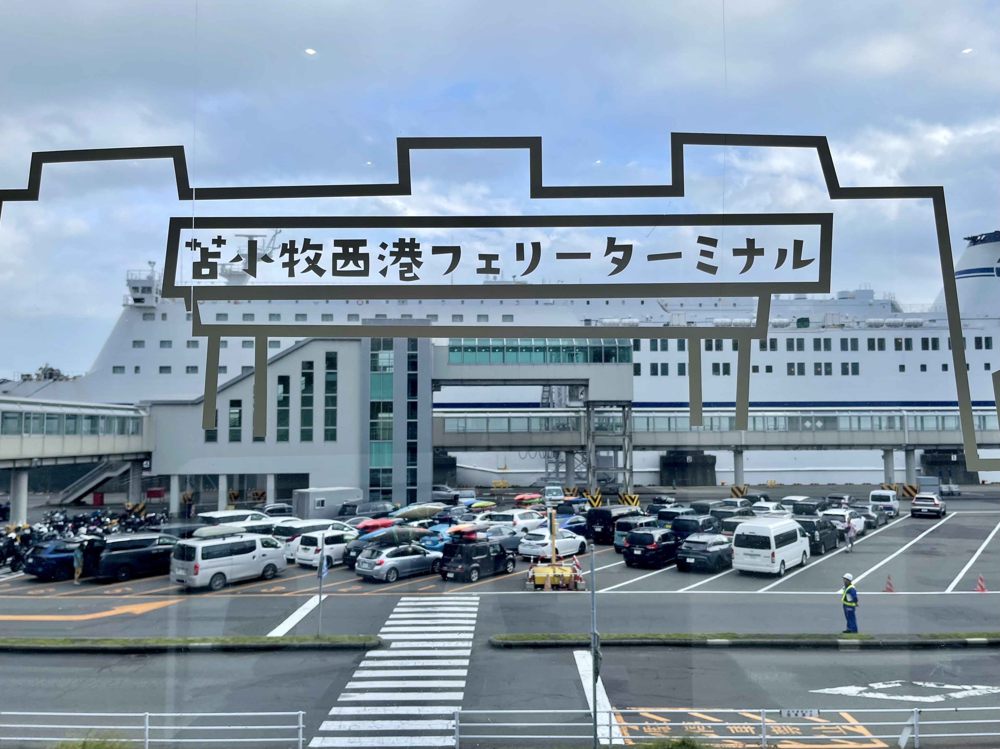

Last day. Asahikawa to Tomakomai, then back to the main island by ferry. Stopping in Biei on the way.
Biei — Blue Pond and Shirahige Falls
Southeast from Asahikawa, into Biei. The Blue Pond in Biei Shirogane is a man-made pond whose distinctive blue is said to come from microscopic particles — including aluminum compounds from volcanic-origin water — that scatter the light. I'd been here on the SR400 trip, and I wanted to come back on the XSR900 too.

Even with cloud cover, the color of the water held up. The dead birch trunks rising from the surface make a sci-fi scene that doesn't get old. I also stopped at Shirahige Falls nearby. From the suspension bridge above, you look down on a bluish river with white water pouring into it.

Collecting Hokuren flags
Any rider who's toured Hokkaido knows the Hokuren flags. Hokuren gas stations hand out small rider flags printed with Hokkaido dialect words. The design changes each year, and plenty of riders collect them.


The 2025 set is four words from Hokkaido dialect. Azumashii (comfortable, cozy). Nanmo nanmo (you're welcome / no worries). Taberasaru (you can't help eating it). Menkoi (cute). I picked them up at several Hokuren stations along the route while filling up.
Tomakomai West Port Ferry Terminal — goodbye, Hokkaido

I reached the Tomakomai West Port Ferry Terminal. The same terminal I'd come into from Ōarai — this time standing on the going-back side. While I waited to board, I went over the trip in my head.
Hokkaido was under heavy-rain warnings, but somehow the places I stopped were either clear or just overcast; almost no rain on me. The wallet incident happened, but the kindness of locals turned it around. A trip blessed by both the weather and the people.
Total distance 2,400 km. With this, the XSR900 Hokkaido tour is closed.